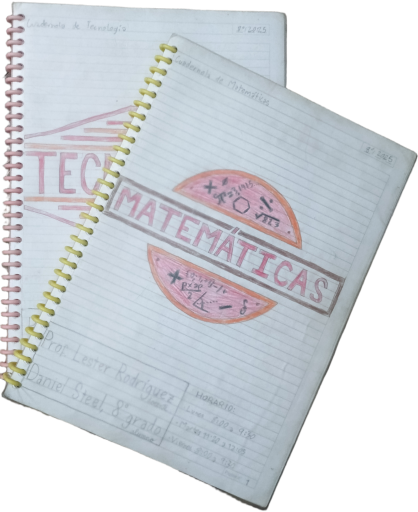

¿Quienes somos?
Una empresa de cuadernos artesanales de alta calidad

Fundado el 28 de octubre de 2023, Mooswa es una rama de la empresa Steel Hnos que se dedica a la fabricación y el suministro de cuadernos artesanales de alta calidad. Nuestra misión es ofrecer a nuestros clientes productos únicos y personalizados que reflejen su estilo y personalidad, al mismo tiempo que promovemos la sostenibilidad y el cuidado del medio ambiente. Nos enorgullece ser una empresa comprometida con la calidad y la creatividad, y trabajamos arduamente para superar las expectativas en cada producto que ofrecemos. Nuestros productos son hechas a mano con el máximo nivel de dedicación y compromiso. Cada cuaderno está garantizado para tener una alta resistencia y durabilidad, y además ofrecemos una amplia variedad de diseños y opciones de personalización para que cada cliente pueda encontrar el cuaderno perfecto para sus necesidades y gustos.